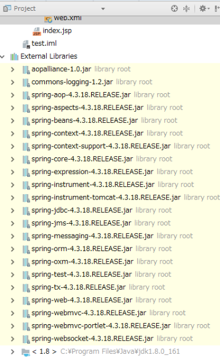
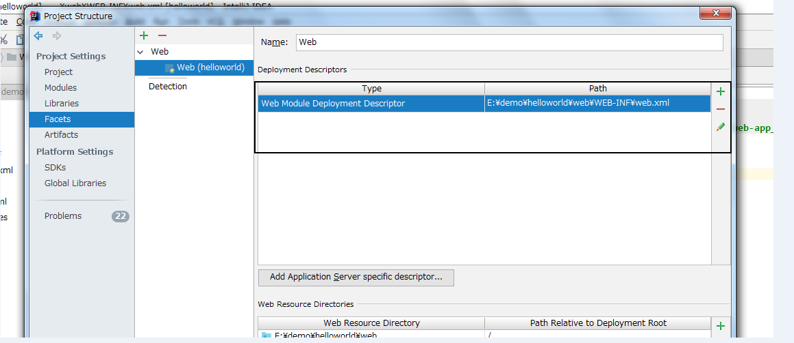

（1）M 指的是 模型（Model）
模型实质指的就是数据，即对数据的操作，也即对dao、bean等的相关操作。
（2）V 指的是 视图（View）
视图的作用就是显示模型中的数据，即数据的显示，也即jsp，html等相关操作。
（3）C 指的是 控制器（Controller）
控制器（Controller）的作用就是将不同的模型数据（Model）显示在不同的视图（View）上。
比如Servlet，用户请求会经过servlet（Controller），经过数据处理（Model），返回到jsp等页面（View）。
（1）SpringMVC是Spring框架的一个模块,是基于mvc的webframework模块。
（2）用于替代servlet（处理请求、响应请求，获取表单参数，表单校验等），且支持REST形式的URL请求。
（3）Spring MVC采用了松散耦合的可插拔组件结构，通过使用一套注解，使一个Java类成为前端控制器(Controller)，不需要实现任何接口。
引入相关jar包或添加相关依赖信息。
step1：配置前端控制器（DispatcherServlet）
作用：用于接收请求、响应请求，即相当于一个中央转发器。
step2：配置前端处理器映射器（HandlerMapping）
作用：用于根据 url 查找 Handler（Controller）。
step3：配置前端处理器适配器（HandlerAdapter）
作用：按照指定的规则去执行 Handler。
step4：配置视图解析器（ViewResolver）
作用：根据逻辑视图解析成真正的视图 View。
step5：编写视图 View
作用：展现给前台的页面，html，jsp等。
step6：编写业务代码 Controller、Service、Dao（也即Handler）
作用：编写业务逻辑处理代码。
其中：step5、step6需要程序员自己开发，其余的只需配置即可。
step1：浏览器发送一个HTTP请求。
step2：请求进入前端控制器 DispatcherServlet。
step3：DispatcherServlet 调用映射器 HandlerMapping 查找相应的 Handler，DispatcherServlet 调用适配器HandlerAdapter 去执行 Handler。
step4：Controller 调用相关处理后，将结果（ModelAndView）返回给 视图解析器 ViewResolver。
step5：ViewResolver 定位到 相对应的 视图 View（比如 html，jsp等），返回响应结果给浏览器。
（1）新建一个springmvc项目（电脑可以联网时）。
step1：File --> New --> Project...
step2：选择Spring --> Spring MVC(会自动勾选Web Application)。
step3：填写项目名。
step4：等待联网下载。（此处耐心等待即可，切记不要乱点，要不然后面可能会出现一系列恶心的情况，比如404问题等）
step5：项目目录结构如下图：
step6：配置tomcat。选择Local，并添加本地的tomcat。
输入项目名（可选操作），以及Deployment。
选择Artifact。
点击“+”号，选择项目（war包）。可以根据需要选择是否填写项目名。
step7：写一个index.jsp页面，测试tomcat是否成功。
【index.jsp】
<%@ page contentType="text/html;charset=UTF-8" language="java" %>
<html>
<head>
<title>首页</title>
</head>
<body>
服务正常启动
</body>
</html>
step8：启动tomcat（一般会自动跳转到画面，如下画面，即可成功）。
step9：配置前端映射器（DispatcherServlet）
【默认的web.xml】
<?xml version="1.0" encoding="UTF-8"?>
<web-app xmlns="http://xmlns.jcp.org/xml/ns/javaee"
xmlns:xsi="http://www.w3.org/2001/XMLSchema-instance"
xsi:schemaLocation="http://xmlns.jcp.org/xml/ns/javaee http://xmlns.jcp.org/xml/ns/javaee/web-app_4_0.xsd"
version="4.0">
<context-param>
<param-name>contextConfigLocation</param-name>
<param-value>/WEB-INF/applicationContext.xml</param-value>
</context-param>
<listener>
<listener-class>org.springframework.web.context.ContextLoaderListener</listener-class>
</listener>
<servlet>
<servlet-name>dispatcher</servlet-name>
<servlet-class>org.springframework.web.servlet.DispatcherServlet</servlet-class>
<load-on-startup>1</load-on-startup>
</servlet>
<servlet-mapping>
<servlet-name>dispatcher</servlet-name>
<url-pattern>*.form</url-pattern>
</servlet-mapping>
</web-app>
【可以自定义web.xml】
<?xml version="1.0" encoding="UTF-8"?>
<web-app xmlns="http://xmlns.jcp.org/xml/ns/javaee"
xmlns:xsi="http://www.w3.org/2001/XMLSchema-instance"
xsi:schemaLocation="http://xmlns.jcp.org/xml/ns/javaee http://xmlns.jcp.org/xml/ns/javaee/web-app_4_0.xsd"
version="4.0">
<servlet>
<servlet-name>dispatcher</servlet-name>
<servlet-class>org.springframework.web.servlet.DispatcherServlet</servlet-class>
<init-param>
<param-name>contextConfigLocation</param-name>
<param-value>classpath:dispatcher-servlet.xml</param-value>
</init-param>
<load-on-startup>1</load-on-startup>
</servlet>
<servlet-mapping>
<servlet-name>dispatcher</servlet-name>
<url-pattern>/</url-pattern>
</servlet-mapping>
</web-app>
step10：配置（dispatcher-servlet.xml），在类路径下。
普通工程在 src目录下，maven工程在resources路径下。
【dispatcher-servlet.xml】
<?xml version="1.0" encoding="UTF-8"?>
<beans xmlns="http://www.springframework.org/schema/beans"
xmlns:xsi="http://www.w3.org/2001/XMLSchema-instance"
xmlns:context="http://www.springframework.org/schema/context"
xmlns:mvc="http://www.springframework.org/schema/mvc"
xsi:schemaLocation="http://www.springframework.org/schema/beans
http://www.springframework.org/schema/beans/spring-beans.xsd
http://www.springframework.org/schema/context
http://www.springframework.org/schema/context/spring-context.xsd
http://www.springframework.org/schema/mvc
http://www.springframework.org/schema/mvc/spring-mvc.xsd">
<!-- 开启自动扫描包 -->
<context:component-scan base-package="com.lyh.controller"/>
<!--配置<mvc:default-servlet-handler />后，会在Spring MVC上下文中定义一个org.springframework.web.servlet.resource.DefaultServletHttpRequestHandler，
它会像一个检查员，对进入DispatcherServlet的URL进行筛查，如果发现是静态资源的请求，就将该请求转由Web应用服务器默认的Servlet处理，如果不是静态资源的请求，才由DispatcherServlet继续处理。-->
<mvc:default-servlet-handler/>
<!-- 配置注解的处理器映射器和处理器适配器（简化配置）-->
<mvc:annotation-driven />
<!-- 配置视图解析器 -->
<bean id="defaultViewResolver" class="org.springframework.web.servlet.view.InternalResourceViewResolver">
<property name="prefix" value="/WEB-INF/"/><!--设置JSP文件的目录位置-->
<property name="suffix" value=".jsp"/>
</bean>
</beans>
【配置注解的处理器映射器和处理器适配器（方式一：）】
<!-- 配置注解的处理器映射器和处理器适配器（简化配置） -->
<mvc:annotation-driven />
【配置注解的处理器映射器和处理器适配器（方式二：）】
<!-- 注解的处理器适配器 -->
<!-- <bean class="org.springframework.web.servlet.mvc.method.annotation.RequestMappingHandlerAdapter"/> -->
<!-- 注解的处理器映射器 -->
<!-- <bean class="org.springframework.web.servlet.mvc.method.annotation.RequestMappingHandlerMapping"/> -->
【注：】
<mvc:default-servlet-handler/>
<mvc:annotation-driven />
只存在<mvc:default-servlet-handler/>时，可能会提示404错误，添加<mvc:annotation-driven />即可。
（1）当两个标签均存在时，<mvc:annotation-driven /> 提供了 RequestMappingHandlerAdapter，可以用于处理 @RequestMapping注解。
（2）只存在<mvc:default-servlet-handler/>时，不能处理@RequestMapping注解。
（3）都不存在时，框架默认提供 AnnotationMethodHandlerAdapter， 用于处理 @RequestMapping注解。
step11：编写controller
package com.lyh.controller;
import org.springframework.stereotype.Controller;
import org.springframework.web.bind.annotation.RequestMapping;
@Controller
public class HelloController {
@RequestMapping("/hello")
public String show(){
return "hello";
}
}
step12：编写hello.jsp
<%@ page contentType="text/html;charset=UTF-8" language="java" %>
<html>
<head>
<title>hello</title>
</head>
<body>
<h1>helloworld</h1>
</body>
</html>
step13：重启服务，输入：http://localhost:8080/hello，会跳转到以下页面，至此，helloworld结束。
（2）新建一个Web工程（电脑不能联网时）：
若电脑不能联网，可以直接建立一个web工程，然后手动导入相关jar包。
step1：新建一个web工程。
File --> New --> Project...
step2：java --> Web application
step3：输入项目名
项目目录结构如下：
step4：导入jar包。
File --> Project Structure
选择JARs or directories...
选择jar包。
注：此处的jar包，理论上不需要这么多，之前栽过坑（少导了几个jar包，导致一直提示404错误，以防万一，都给导了）。

step5：创建WEB-INF目录与web.xml文件。
可以看到 <servlet-name>dispatcher</servlet-name> 出错。此处可能是由于web.xml文件未配置。
File --> Project Structure ，配置 web.xml 路径。

其余操作，类似于第一种方式，此处不再赘述。